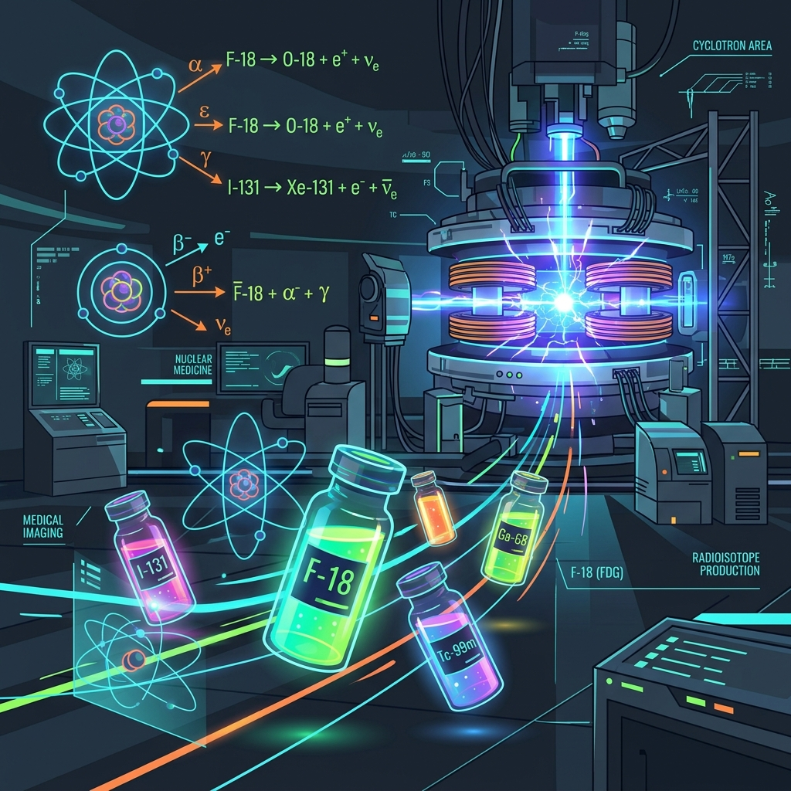

VCE Physics Option 2.6 Study Report
How is Radiation Used to Maintain Human Health?
An explanation of the physical principles behind medical imaging and radiation therapies.
1.0 Introduction
Radiation allows doctors to look inside the body and treat disease without surgery. Different types of radiation interact with tissue in different ways, making them useful for different medical applications.
When radiation passes through the body, some tissues absorb it while others let it pass through. By measuring the radiation that exits the body, doctors can create detailed images of internal organs and bones.
This website explains how X-rays are produced, how different imaging techniques compare, and how nuclear reactors and cyclotrons produce medical radioisotopes. It also outlines the biological risks of radiation and the safety protocols used to protect patients.
2.0 Classification of the Electromagnetic Spectrum
Electromagnetic waves carry energy through space. We divide the spectrum into ionising and non-ionising radiation depending on how much energy the waves carry.
If the photons have enough energy to knock electrons out of atoms, they are called ionising. In human cells, this process can damage DNA and cause cell mutation or death.
Radio Waves
Non-IonisingLocated at the lowest energy end of the spectrum. Radio waves cannot ionise atoms but are crucial in medicine for MRI scans to flip hydrogen protons in strong magnetic fields.
| Wavelength (λ) | Frequency (ν) | Photon Energy (eV) | Safety Parameter |
|---|---|---|---|
| > 1 m | < 300 MHz | < 1.24 µeV | No atomic ionisation risk. Safe for human tissue. |
3.0 Physics of Diagnostic X-Ray Production
An X-ray tube accelerates electrons using a high voltage and smashes them into a tungsten target. When these fast-moving electrons hit the target, they lose kinetic energy and convert it into electromagnetic radiation.
Most of this energy becomes heat, but about one percent is emitted as X-ray photons. These photons are produced by two different processes: Bremsstrahlung (braking radiation) and characteristic X-ray emission.
Operating Controls
Controls the kinetic energy of incident electrons. This determines the penetrating power of the resulting X-rays.
Controls the temperature of the filament. This determines the quantity of electrons released.
Cathode Filament (Negative Electrode)
The cathode is the negative electrode. It contains a tungsten filament that we heat by passing a current through it. Heating the filament gives its electrons enough thermal energy to escape the surface, a process called thermionic emission. The surrounding focusing cup repels the electrons to keep them in a narrow beam.
4.0 Medical Imaging Techniques
Doctors choose different imaging techniques depending on what part of the body they need to see. Each method relies on a different physical process and has distinct advantages and disadvantages.
For example, X-rays are best for looking at dense bones, while MRI is better for viewing soft tissues like the brain and muscles.
X-Ray Radiography
An X-ray machine shoots a brief beam of X-rays through the patient's body. Dense bones absorb more X-rays because they contain calcium, which has a high atomic number. Soft tissues let most of the X-rays pass through to the detector. This difference in absorption creates a high-contrast shadow image where bones appear white and soft tissues appear dark.
Physics Mechanism: This method relies on the photoelectric effect. When an X-ray photon hits an atom with many electrons, like calcium, it is completely absorbed. In contrast, it passes easily through lighter atoms like hydrogen and carbon in muscles.
Advantages
- Very fast, simple to perform, inexpensive, and highly effective for diagnosing bone fractures.
Drawbacks
- Uses ionising radiation which can damage cells, and provides very poor contrast for soft tissues.
Slide divider to compare MRI soft tissue resolution (left) against the active selected tab (right).
| Imaging Modality | Radiation Class | Average Effective Dose | Relative Cost | Acquisition Speed | Primary Clinical Targets |
|---|---|---|---|---|---|
| Plain Film Radiography | Ionising (Photons) | < 0.1 mSv (Extremities) | $ (Low) | Seconds | Skeletal fractures, dental diagnostics, chest infection screens. |
| Computed Tomography (CT) | Ionising (Rotational X-ray) | 2.0 - 10.0 mSv | $$ (Medium) | Minutes | Internal bleeding, organ damage, solid tumor location scans. |
| Magnetic Resonance (MRI) | Non-Ionising (RF & Magnetic) | 0 mSv | $$$ (High) | 30 - 60 Minutes | Brain structures, ligaments, tendons, spinal disc damage. |
5.0 Production and Decay of Medical Radioisotopes
Radioisotopes are unstable atoms that decay by emitting radiation. In nuclear medicine, doctors put these isotopes inside the patient's body to trace chemical pathways or target cancer cells.
Cyclotrons produce proton-rich isotopes by bombarding a target with high-speed protons, while nuclear reactors produce neutron-rich isotopes by exposing a target to a high flux of neutrons.

Technetium-99m
Gamma emitter| Physical Half-Life | 6.0 hours |
|---|---|
| Primary Emission | Gamma decay (140 keV) |
| Production Source | Nuclear Reactor (Mo-99 generator) |
Description:
Technetium-99m is used in most nuclear medicine scans because it emits gamma rays that are easy to detect and has a short half-life of about six hours. This provides clear images while limiting the time a patient remains radioactive. The 140 keV gamma rays have enough energy to pass through the body to the detector without causing significant ionisation inside the patient.
Primary Clinical Application:
Myocardial perfusion imaging, bone scans, brain imaging, and thyroid diagnostics.
6.0 Radiation Dosimetry and Biological Safety
We measure the biological effect of radiation on human tissue in Sieverts (Sv). This unit accounts for both the amount of energy absorbed and the type of radiation, since some types cause more cell damage than others.
Doctors use the ALARA framework (As Low As Reasonably Achievable) to ensure patients only receive the minimum dose necessary for a successful diagnosis.
Effective Dose Reference Scale
Note: 1 Millisievert (mSv) is equal to 1,000 Micro-sieverts (μSv).
Extremity X-Ray
1.5 µSv
| Natural Background Equivalent | 3.5 Hours |
|---|---|
| Transatlantic Flight Equiv. | 0.2 flights |
The ALARA Optimization Framework
Every medical procedure involving radiation involves a trade-off. We must balance the diagnostic benefits of the scan against the biological risks of exposure. Doctors follow the ALARA principle by minimizing exposure times, increasing shielding, and choosing alternative imaging methods like ultrasound or MRI when possible.
- Ionisation: When high-energy radiation hits atoms in human cells, it can knock electrons out of their orbits. This creates reactive free radicals that can disrupt normal cellular chemistry.
- DNA Damage: Ionising radiation can directly break the chemical bonds in a DNA molecule. If the cell repairs this damage incorrectly, it can lead to mutations that may cause cancer later in life.
- Cell Death: A very high dose of radiation can damage cells so severely that they cannot reproduce and die. This is what causes radiation sickness and tissue damage.
- Accurate Diagnosis: Allows doctors to see fractures, tumors, and blocked blood vessels clearly without invasive surgery. This helps them plan the correct treatment quickly.
- Targeted Therapy: Radioisotopes can deliver highly localized doses of radiation to destroy cancer cells while sparing healthy tissue.
- Effective Monitoring: Allows doctors to track whether a treatment is working, such as checking if a tumor is shrinking after chemotherapy.
7.0 Conclusion
Medical radiation is an essential tool in healthcare that allows doctors to diagnose and treat diseases. By selecting the correct type of radiation, doctors can target specific tissues. For instance, they use non-ionising radiation like radio waves in MRI scans to image soft tissues without biological risk. In contrast, they use ionising radiation like X-rays to obtain clear skeletal images.
Although ionising radiation can cause DNA damage and cell death, safety frameworks like ALARA minimise these hazards. The diagnostic and therapeutic benefits of early detection and targeted cancer therapies heavily outweigh the managed risks. Ultimately, the careful application of nuclear physics principles continues to play a vital role in maintaining human health.